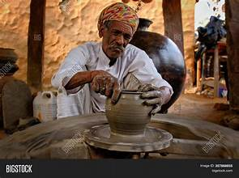

Rediscover Ancient Craftsmanship
Pottery and sculpting have been integral parts of human civilization for millennia. This workshop is a deep dive into the art of shaping clay into beautiful and functional creations. You will learn:
- The history and cultural significance of pottery in different civilizations.
- Techniques like hand-building, wheel-throwing, and carving.
- How to work with different types of clay and tools.
By the end of the session, you will have created your own unique piece, whether it’s a vase, a bowl, or a decorative sculpture. All materials will be provided, and no prior experience is necessary!
Workshops are conducted by professional artisans passionate about sharing their craft. Join us to immerse yourself in this timeless art form!